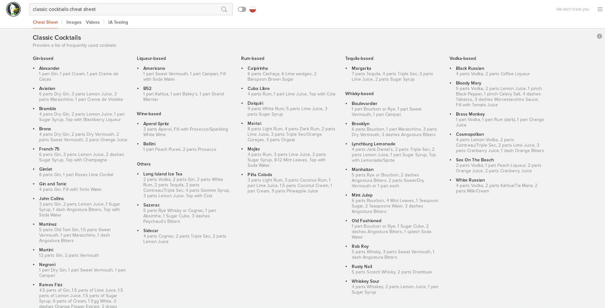

A few days ago I've become the maintainer, and main contributor, of this DuckDuckGo's Instant answer. It has been deployed on beta.duckduckgo.com only so far, as it is clearly just a beta.

My passion for cocktails and carefully mixed drinks is no mistery and thus it was only natural to write such an IA for DuckDuckGo, my main search engine since a few years. It is incomplete, I only wanted to add classic cocktails, not all, and there are a few doubts on the format of the recipes among the community (see the pull request). Namely, the sempiternal question about ounces, millilitres and parts. I side with the parts team but I'm writing this post also to call for anyone interested to express his/her opinions and submit new or better recipes. Any improvement or suggestion is appreciated, let's get this IA out of beta!
Tweet Go Top
comments powered by Disqus